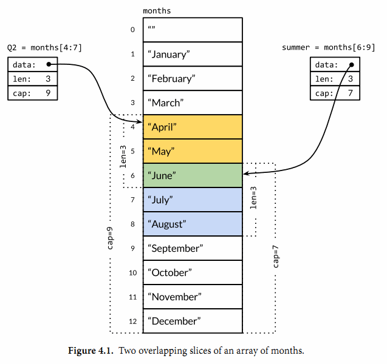
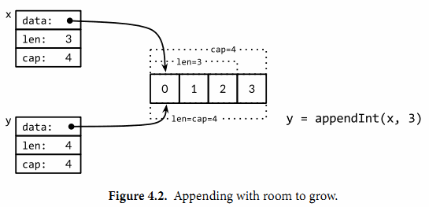
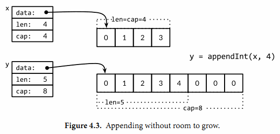

4.2. Slice
Slice（切片）代表变长的序列，序列中每个元素都有相同的类型。一个slice类型一般写作[]T，其中T代表slice中元素的类型；slice的语法和数组很像，只是没有固定长度而已。
数组和slice之间有着紧密的联系。一个slice是一个轻量级的数据结构，提供了访问数组子序列（或者全部）元素的功能，而且slice的底层确实引用一个数组对象。一个slice由三个部分构成：指针、长度和容量。指针指向第一个slice元素对应的底层数组元素的地址，要注意的是slice的第一个元素并不一定就是数组的第一个元素。长度对应slice中元素的数目；长度不能超过容量，容量一般是从slice的开始位置到底层数据的结尾位置。内置的len和cap函数分别返回slice的长度和容量。
多个slice之间可以共享底层的数据，并且引用的数组部分区间可能重叠。图4.1显示了表示一年中每个月份名字的字符串数组，还有重叠引用了该数组的两个slice。数组这样定义
months := [...]string{1: "January", /* ... */, 12: "December"}
因此一月份是months[1]，十二月份是months[12]。通常，数组的第一个元素从索引0开始，但是月份一般是从1开始的，因此我们声明数组时直接跳过第0个元素，第0个元素会被自动初始化为空字符串。
slice的切片操作s[i:j]，其中0 ≤ i≤ j≤ cap(s)，用于创建一个新的slice，引用s的从第i个元素开始到第j-1个元素的子序列。新的slice将只有j-i个元素。如果i位置的索引被省略的话将使用0代替，如果j位置的索引被省略的话将使用len(s)代替。因此，months[1:13]切片操作将引用全部有效的月份，和months[1:]操作等价；months[:]切片操作则是引用整个数组。让我们分别定义表示第二季度和北方夏天月份的slice，它们有重叠部分：

Q2 := months[4:7]
summer := months[6:9]
fmt.Println(Q2) // ["April" "May" "June"]
fmt.Println(summer) // ["June" "July" "August"]
两个slice都包含了六月份，下面的代码是一个包含相同月份的测试（性能较低）：
for _, s := range summer {
for _, q := range Q2 {
if s == q {
fmt.Printf("%s appears in both\n", s)
}
}
}
如果切片操作超出cap(s)的上限将导致一个panic异常，但是超出len(s)则是意味着扩展了slice，因为新slice的长度会变大：
fmt.Println(summer[:20]) // panic: out of range
endlessSummer := summer[:5] // extend a slice (within capacity)
fmt.Println(endlessSummer) // "[June July August September October]"
另外，字符串的切片操作和[]byte字节类型切片的切片操作是类似的。都写作x[m:n]，并且都是返回一个原始字节序列的子序列，底层都是共享之前的底层数组，因此这种操作都是常量时间复杂度。x[m:n]切片操作对于字符串则生成一个新字符串，如果x是[]byte的话则生成一个新的[]byte。
因为slice值包含指向第一个slice元素的指针，因此向函数传递slice将允许在函数内部修改底层数组的元素。换句话说，复制一个slice只是对底层的数组创建了一个新的slice别名（§2.3.2）。下面的reverse函数在原内存空间将[]int类型的slice反转，而且它可以用于任意长度的slice。
gopl.io/ch4/rev
// reverse reverses a slice of ints in place.
func reverse(s []int) {
for i, j := 0, len(s)-1; i < j; i, j = i+1, j-1 {
s[i], s[j] = s[j], s[i]
}
}
这里我们反转数组的应用：
a := [...]int{0, 1, 2, 3, 4, 5}
reverse(a[:])
fmt.Println(a) // "[5 4 3 2 1 0]"
一种将slice元素循环向左旋转n个元素的方法是三次调用reverse反转函数，第一次是反转开头的n个元素，然后是反转剩下的元素，最后是反转整个slice的元素。（如果是向右循环旋转，则将第三个函数调用移到第一个调用位置就可以了。）
s := []int{0, 1, 2, 3, 4, 5}
// Rotate s left by two positions.
reverse(s[:2])
reverse(s[2:])
reverse(s)
fmt.Println(s) // "[2 3 4 5 0 1]"
要注意的是slice类型的变量s和数组类型的变量a的初始化语法的差异。slice和数组的字面值语法很类似，它们都是用花括弧包含一系列的初始化元素，但是对于slice并没有指明序列的长度。这会隐式地创建一个合适大小的数组，然后slice的指针指向底层的数组。就像数组字面值一样，slice的字面值也可以按顺序指定初始化值序列，或者是通过索引和元素值指定，或者用两种风格的混合语法初始化。
和数组不同的是，slice之间不能比较，因此我们不能使用==操作符来判断两个slice是否含有全部相等元素。不过标准库提供了高度优化的bytes.Equal函数来判断两个字节型slice是否相等（[]byte），但是对于其他类型的slice，我们必须自己展开每个元素进行比较：
func equal(x, y []string) bool {
if len(x) != len(y) {
return false
}
for i := range x {
if x[i] != y[i] {
return false
}
}
return true
}
上面关于两个slice的深度相等测试，运行的时间并不比支持==操作的数组或字符串更多，但是为何slice不直接支持比较运算符呢？这方面有两个原因。第一个原因，一个slice的元素是间接引用的，一个slice甚至可以包含自身（译注：当slice声明为[]interface{}时，slice的元素可以是自身）。虽然有很多办法处理这种情形，但是没有一个是简单有效的。
第二个原因，因为slice的元素是间接引用的，一个固定的slice值（译注：指slice本身的值，不是元素的值）在不同的时刻可能包含不同的元素，因为底层数组的元素可能会被修改。而例如Go语言中map的key只做简单的浅拷贝，它要求key在整个生命周期内保持不变性（译注：例如slice扩容，就会导致其本身的值/地址变化）。而用深度相等判断的话，显然在map的key这种场合不合适。对于像指针或chan之类的引用类型，==相等测试可以判断两个是否是引用相同的对象。一个针对slice的浅相等测试的==操作符可能是有一定用处的，也能临时解决map类型的key问题，但是slice和数组不同的相等测试行为会让人困惑。因此，安全的做法是直接禁止slice之间的比较操作。
slice唯一合法的比较操作是和nil比较，例如：
if summer == nil { /* ... */ }
一个零值的slice等于nil。一个nil值的slice并没有底层数组。一个nil值的slice的长度和容量都是0，但是也有非nil值的slice的长度和容量也是0的，例如[]int{}或make([]int, 3)[3:]。与任意类型的nil值一样，我们可以用[]int(nil)类型转换表达式来生成一个对应类型slice的nil值。
var s []int // len(s) == 0, s == nil
s = nil // len(s) == 0, s == nil
s = []int(nil) // len(s) == 0, s == nil
s = []int{} // len(s) == 0, s != nil
如果你需要测试一个slice是否是空的，使用len(s) == 0来判断，而不应该用s == nil来判断。除了和nil相等比较外，一个nil值的slice的行为和其它任意0长度的slice一样；例如reverse(nil)也是安全的。除了文档已经明确说明的地方，所有的Go语言函数应该以相同的方式对待nil值的slice和0长度的slice。
内置的make函数创建一个指定元素类型、长度和容量的slice。容量部分可以省略，在这种情况下，容量将等于长度。
make([]T, len)
make([]T, len, cap) // same as make([]T, cap)[:len]
在底层，make创建了一个匿名的数组变量，然后返回一个slice；只有通过返回的slice才能引用底层匿名的数组变量。在第一种语句中，slice是整个数组的view。在第二个语句中，slice只引用了底层数组的前len个元素，但是容量将包含整个的数组。额外的元素是留给未来的增长用的。
4.2.1. append函数
内置的append函数用于向slice追加元素：
var runes []rune
for _, r := range "Hello, 世界" {
runes = append(runes, r)
}
fmt.Printf("%q\n", runes) // "['H' 'e' 'l' 'l' 'o' ',' ' ' '世' '界']"
在循环中使用append函数构建一个由九个rune字符构成的slice，当然对应这个特殊的问题我们可以通过Go语言内置的[]rune(“Hello, 世界”)转换操作完成。
append函数对于理解slice底层是如何工作的非常重要，所以让我们仔细查看究竟是发生了什么。下面是第一个版本的appendInt函数，专门用于处理[]int类型的slice：
gopl.io/ch4/append
func appendInt(x []int, y int) []int {
var z []int
zlen := len(x) + 1
if zlen <= cap(x) {
// There is room to grow. Extend the slice.
z = x[:zlen]
} else {
// There is insufficient space. Allocate a new array.
// Grow by doubling, for amortized linear complexity.
zcap := zlen
if zcap < 2*len(x) {
zcap = 2 * len(x)
}
z = make([]int, zlen, zcap)
copy(z, x) // a built-in function; see text
}
z[len(x)] = y
return z
}
每次调用appendInt函数，必须先检测slice底层数组是否有足够的容量来保存新添加的元素。如果有足够空间的话，直接扩展slice（依然在原有的底层数组之上），将新添加的y元素复制到新扩展的空间，并返回slice。因此，输入的x和输出的z共享相同的底层数组。
如果没有足够的增长空间的话，appendInt函数则会先分配一个足够大的slice用于保存新的结果，先将输入的x复制到新的空间，然后添加y元素。结果z和输入的x引用的将是不同的底层数组。
虽然通过循环复制元素更直接，不过内置的copy函数可以方便地将一个slice复制另一个相同类型的slice。copy函数的第一个参数是要复制的目标slice，第二个参数是源slice，目标和源的位置顺序和dst = src赋值语句是一致的。两个slice可以共享同一个底层数组，甚至有重叠也没有问题。copy函数将返回成功复制的元素的个数（我们这里没有用到），等于两个slice中较小的长度，所以我们不用担心覆盖会超出目标slice的范围。
为了提高内存使用效率，新分配的数组一般略大于保存x和y所需要的最低大小。通过在每次扩展数组时直接将长度翻倍从而避免了多次内存分配，也确保了添加单个元素操作的平均时间是一个常数时间。这个程序演示了效果：
func main() {
var x, y []int
for i := 0; i < 10; i++ {
y = appendInt(x, i)
fmt.Printf("%d cap=%d\t%v\n", i, cap(y), y)
x = y
}
}
每一次容量的变化都会导致重新分配内存和copy操作：
0 cap=1 [0]
1 cap=2 [0 1]
2 cap=4 [0 1 2]
3 cap=4 [0 1 2 3]
4 cap=8 [0 1 2 3 4]
5 cap=8 [0 1 2 3 4 5]
6 cap=8 [0 1 2 3 4 5 6]
7 cap=8 [0 1 2 3 4 5 6 7]
8 cap=16 [0 1 2 3 4 5 6 7 8]
9 cap=16 [0 1 2 3 4 5 6 7 8 9]
让我们仔细查看i=3次的迭代。当时x包含了[0 1 2]三个元素，但是容量是4，因此可以简单将新的元素添加到末尾，不需要新的内存分配。然后新的y的长度和容量都是4，并且和x引用着相同的底层数组，如图4.2所示。

在下一次迭代时i=4，现在没有新的空余的空间了，因此appendInt函数分配一个容量为8的底层数组，将x的4个元素[0 1 2 3]复制到新空间的开头，然后添加新的元素i，新元素的值是4。新的y的长度是5，容量是8；后面有3个空闲的位置，三次迭代都不需要分配新的空间。当前迭代中，y和x是对应不同底层数组的view。这次操作如图4.3所示。

内置的append函数可能使用比appendInt更复杂的内存扩展策略。因此，通常我们并不知道append调用是否导致了内存的重新分配，因此我们也不能确认新的slice和原始的slice是否引用的是相同的底层数组空间。同样，我们不能确认在原先的slice上的操作是否会影响到新的slice。因此，通常是将append返回的结果直接赋值给输入的slice变量：
runes = append(runes, r)
更新slice变量不仅对调用append函数是必要的，实际上对应任何可能导致长度、容量或底层数组变化的操作都是必要的。要正确地使用slice，需要记住尽管底层数组的元素是间接访问的，但是slice对应结构体本身的指针、长度和容量部分是直接访问的。要更新这些信息需要像上面例子那样一个显式的赋值操作。从这个角度看，slice并不是一个纯粹的引用类型，它实际上是一个类似下面结构体的聚合类型：
type IntSlice struct {
ptr *int
len, cap int
}
我们的appendInt函数每次只能向slice追加一个元素，但是内置的append函数则可以追加多个元素，甚至追加一个slice。
var x []int
x = append(x, 1)
x = append(x, 2, 3)
x = append(x, 4, 5, 6)
x = append(x, x...) // append the slice x
fmt.Println(x) // "[1 2 3 4 5 6 1 2 3 4 5 6]"
通过下面的小修改，我们可以达到append函数类似的功能。其中在appendInt函数参数中的最后的“…”省略号表示接收变长的参数为slice。我们将在5.7节详细解释这个特性。
func appendInt(x []int, y ...int) []int {
var z []int
zlen := len(x) + len(y)
// ...expand z to at least zlen...
copy(z[len(x):], y)
return z
}
为了避免重复，和前面相同的代码并没有显示。
4.2.2. Slice内存技巧
让我们看看更多的例子，比如旋转slice、反转slice或在slice原有内存空间修改元素。给定一个字符串列表，下面的nonempty函数将在原有slice内存空间之上返回不包含空字符串的列表：
gopl.io/ch4/nonempty
// Nonempty is an example of an in-place slice algorithm.
package main
import "fmt"
// nonempty returns a slice holding only the non-empty strings.
// The underlying array is modified during the call.
func nonempty(strings []string) []string {
i := 0
for _, s := range strings {
if s != "" {
strings[i] = s
i++
}
}
return strings[:i]
}
比较微妙的地方是，输入的slice和输出的slice共享一个底层数组。这可以避免分配另一个数组，不过原来的数据将可能会被覆盖，正如下面两个打印语句看到的那样：
data := []string{"one", "", "three"}
fmt.Printf("%q\n", nonempty(data)) // `["one" "three"]`
fmt.Printf("%q\n", data) // `["one" "three" "three"]`
因此我们通常会这样使用nonempty函数：data = nonempty(data)。
nonempty函数也可以使用append函数实现：
func nonempty2(strings []string) []string {
out := strings[:0] // zero-length slice of original
for _, s := range strings {
if s != "" {
out = append(out, s)
}
}
return out
}
无论如何实现，以这种方式重用一个slice一般都要求最多为每个输入值产生一个输出值，事实上很多这类算法都是用来过滤或合并序列中相邻的元素。这种slice用法是比较复杂的技巧，虽然使用到了slice的一些技巧，但是对于某些场合是比较清晰和有效的。
一个slice可以用来模拟一个stack。最初给定的空slice对应一个空的stack，然后可以使用append函数将新的值压入stack：
stack = append(stack, v) // push v
stack的顶部位置对应slice的最后一个元素：
top := stack[len(stack)-1] // top of stack
通过收缩stack可以弹出栈顶的元素
stack = stack[:len(stack)-1] // pop
要删除slice中间的某个元素并保存原有的元素顺序，可以通过内置的copy函数将后面的子slice向前依次移动一位完成：
func remove(slice []int, i int) []int {
copy(slice[i:], slice[i+1:])
return slice[:len(slice)-1]
}
func main() {
s := []int{5, 6, 7, 8, 9}
fmt.Println(remove(s, 2)) // "[5 6 8 9]"
}
如果删除元素后不用保持原来顺序的话，我们可以简单的用最后一个元素覆盖被删除的元素：
func remove(slice []int, i int) []int {
slice[i] = slice[len(slice)-1]
return slice[:len(slice)-1]
}
func main() {
s := []int{5, 6, 7, 8, 9}
fmt.Println(remove(s, 2)) // "[5 6 9 8]
}
练习 4.3： 重写reverse函数，使用数组指针代替slice。
练习 4.4： 编写一个rotate函数，通过一次循环完成旋转。
练习 4.5： 写一个函数在原地完成消除[]string中相邻重复的字符串的操作。
练习 4.6： 编写一个函数，原地将一个UTF-8编码的[]byte类型的slice中相邻的空格（参考unicode.IsSpace）替换成一个空格返回
练习 4.7： 修改reverse函数用于原地反转UTF-8编码的[]byte。是否可以不用分配额外的内存？